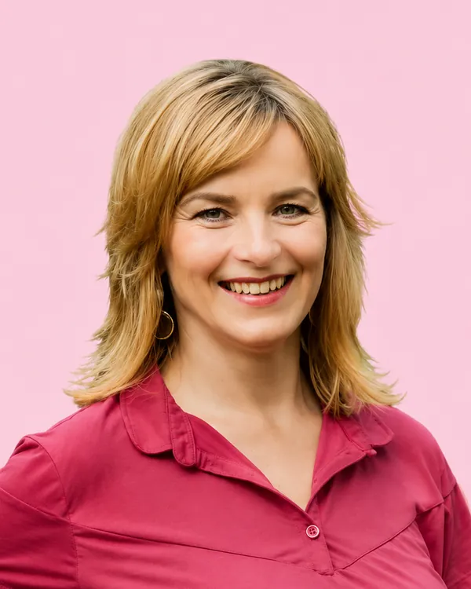

Leona Pekařová
Podnikatelka v kreativních odvětvích, zakladatelka CIRKUL dobrosklad Šumpersko
Jako drobná podnikatelka z centra Šumperka vidím, jak z našich ulic mizí život. Chci město, které bude živé, bezpečné, hospodárné a bude se v něm dobře žít všem generacím.
Vadí mi plýtvání věcmi i veřejnými prostředky, projekty dělané jen na efekt a neudržitelné, nedostupné bydlení, rostoucí rizika drog pro naše děti i nepřipravenost na klimatické a bezpečnostní hrozby.
Stejně tak chci zlepšit dopravu, parkování, cyklostezky i fungování MHD. Šumperk potřebuje řešit dostupnost, viditelnost na mapě, moderní školy propojené s potřebami místních firem, s trhem práce.
Chybí nám dostupné služby pro stárnoucí populaci i cílená pomoc sociálně ohroženým a motivační podpora nepřizpůsobivým.
Jako provozovatelka reuse centra a sociálního šatníku vidím budoucnost i v udržitelném životním stylu, efektivnějším odpadovém hospodářství, recyklaci, ve změně spotřebitelských návyků, větší solidaritě obyvatel a komunitním duchu. Tato témata myslím vážně, jsem členkou předsednictva REUSE FEDERACE ČR a držitelkou ocenění inspirativního dobrovolníka KŘESADLO za humanitární činnost.
Věřím, že když bude radnice opravdová, otevřená, férová a bude naslouchat lidem, vrátí se do města důvěra i přátelská atmosféra. Šumperk má obrovský potenciál být z nejlepším místem pro život na světě.
Chci pomoci tento potenciál proměnit ve skutečnost – nejen sliby a přibarveným PR, ale konkrétními výsledky. Mysleme globálně, jednejme lokálně.
Nechci věci jen ANO JAKO NA OKO. Chci je dělat DOOPRAVDY.